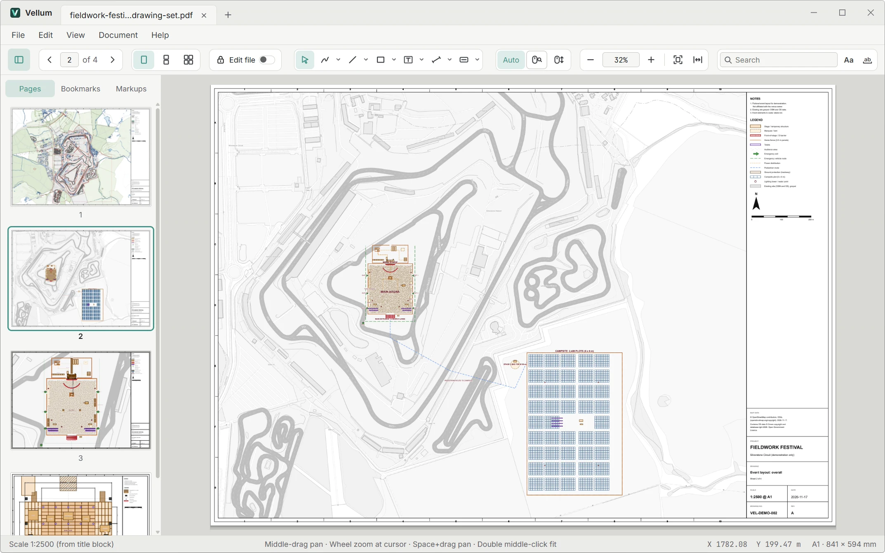
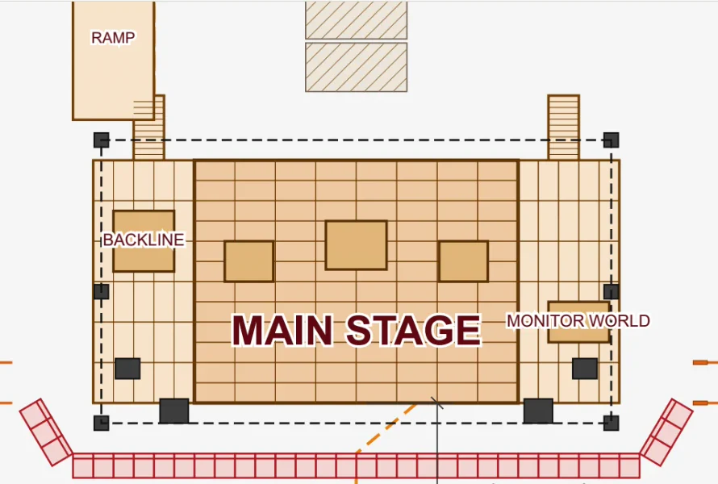
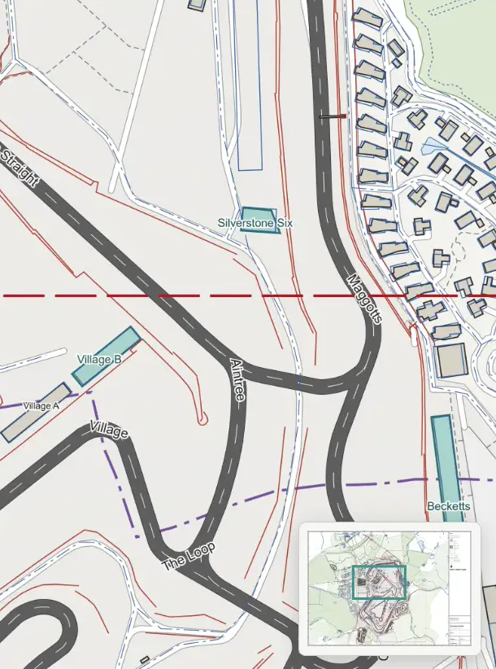
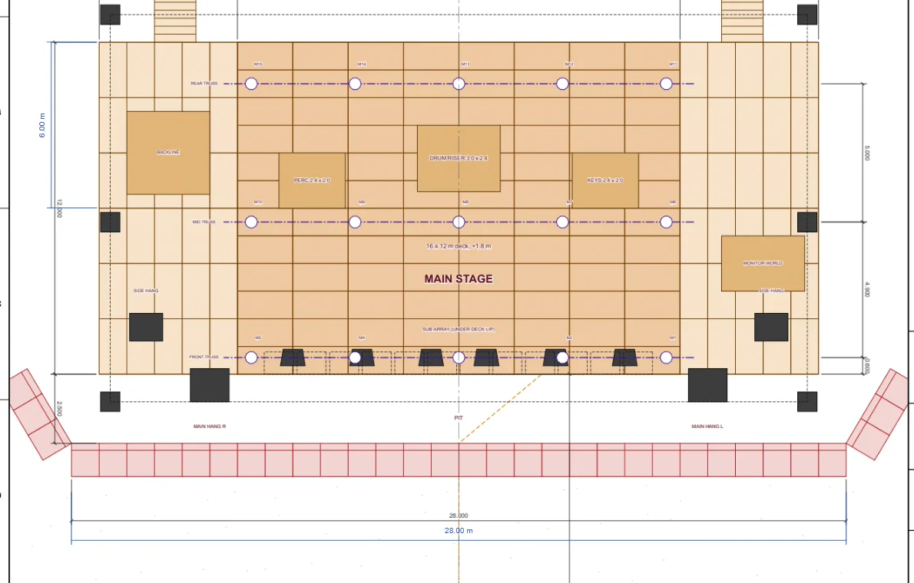
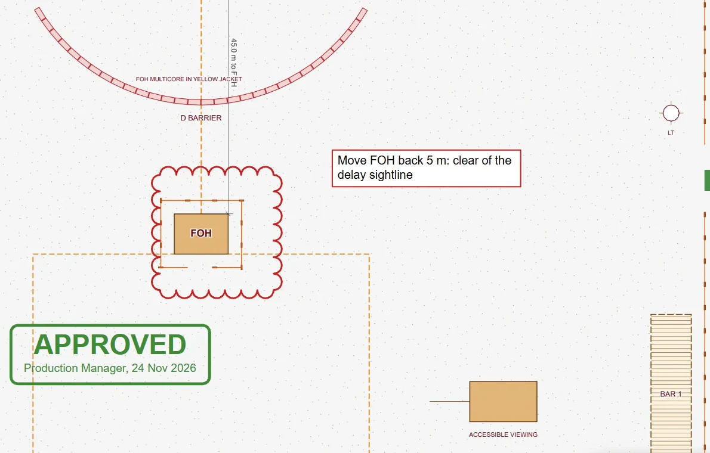
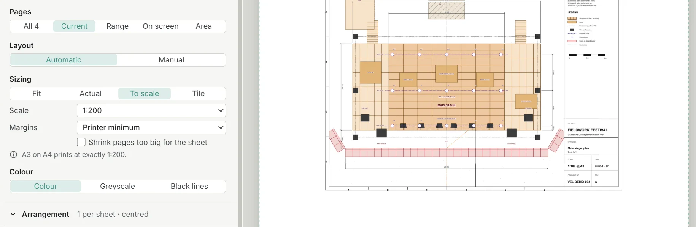
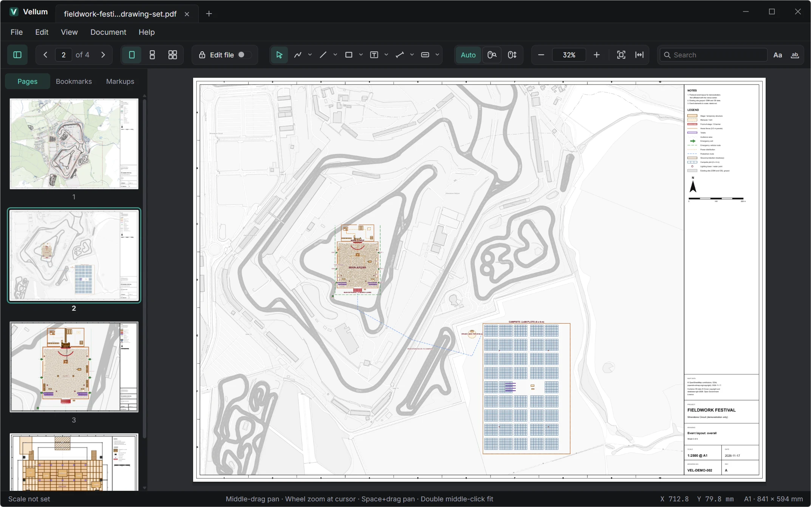

Built for drawings,
not documents.
A fast PDF and image viewer for stage plans, site layouts and scanned blueprints.
Try the {{rcVersion}} release candidate
Vellum is for Windows PCs. Send yourself this link and download it there.
Vellum is for Windows PCs. This download won't run on this computer.

Sharp the moment you stop zooming.
Wheel zoom, typical drawings.
- 1:200prints to a real scale
- 0accounts, cookies or analytics
What it does
Everything you do with a drawing,
without the wait.
Stage plans, site layouts, rigging plots, sixty-year-old scanned blueprints: the files that make general-purpose PDF readers sit and think. Vellum draws only the part you're looking at, at the detail you need.
-

Quick on big drawings
No blank pages and no progress bars. You get a preview first, then the detail where you're looking. Drawings you've opened before come back faster.
-

Moves like CAD
The wheel zooms, middle-drag pans, double middle-click fits. Big drawings get a mini map. Documents still scroll.
-

Real-world scale
Reads the scale off the title block, so you measure in metres on site. Lengths, areas, perimeters, angles and dimensions.
-

Markup, stamps and signatures
Clouds, arrows, text, shapes, pen and highlighter, saved as standard PDF markup that Acrobat and any other viewer will show. Add stamps, or draw your signature once and place it anywhere.
-

Prints to scale
Fit, actual size, a real ratio like 1:200, or tiled with cut marks. Place the crops by hand if you want. The Black lines option turns grubby scans into clean, solid linework.
Images too: JPEG, PNG, WebP, TIFF, BMP and GIF open the same way, colour profiles and all, however big.
Light and dark
Light or dark,
it follows Windows.
Or set it either way in View > Theme.

Installing
Windows will warn you
the first time.
The installer isn't code signed, so Windows may stop it with a Windows protected your PC warning. To carry on:
- 1Choose More info
- 2Choose Run anyway
Vellum is open source: the code is on GitHub, and every release is built from it in public. No admin rights needed. If your browser warns you about the download, choose Keep.


Open your next
drawing in Vellum.
Made by an event engineer who was tired of waiting for drawings. Free and open source.